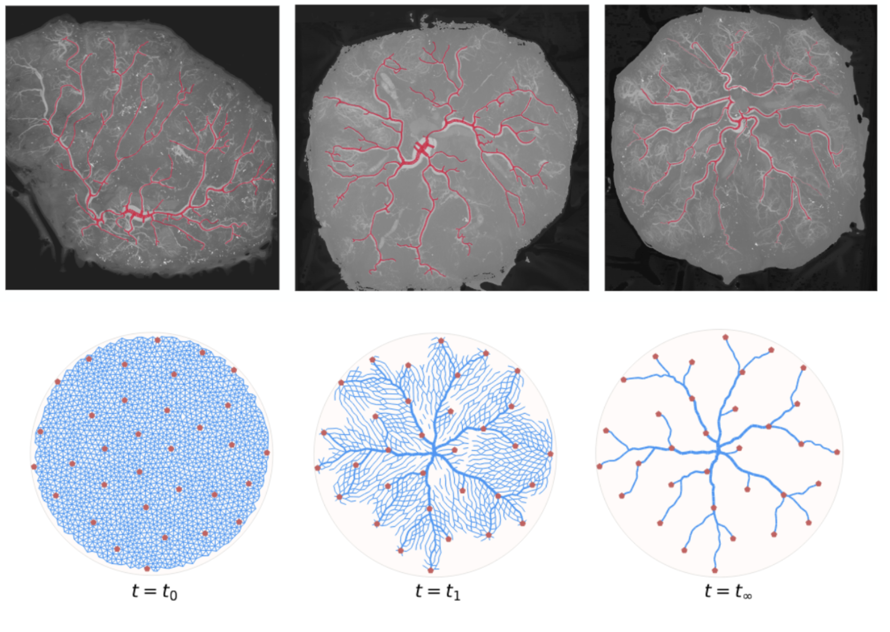

Summary
The placenta is a transient organ, yet an indispensable one, as it is the primary interface between a mother and a developing fetus.
Abnormal placental chorionic vasculature correlates with a variety of complications for both mother and child, including preeclampsia, gestational diabetes, and predisposition to autism spectrum disorders in the developing child. Thus far, placental chorionic vascular development has been studied mainly observationally, preventing researchers from revealing the mechanisms behind correlations to disease.
We frame the development of the placental chorionic plate vasculature in terms of a reduced-order parameter mechanistic model, which depends primarily on the ratio of the placenta growth rate and the vessel growth rate. We use microCT scans of healthy full-term placentas to constrain the model parameters and discuss what this mechanistic model means for disease conditions such as fetal growth restriction.